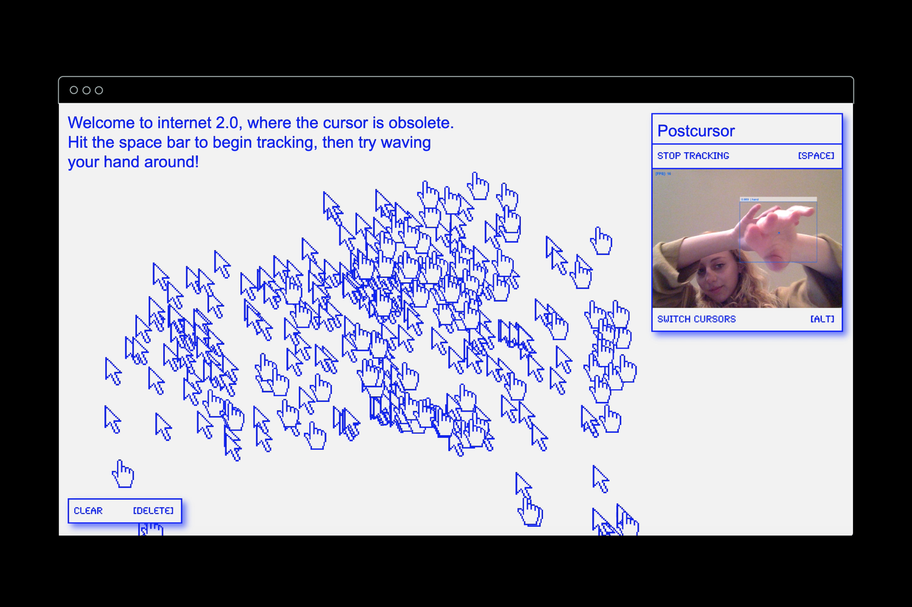

Postcursor / Starrynite2020
Postcursor and Starrynite are microsites built according to the principles of relational design. Each site uses machine learning to generate graphics according to users’ hand movements, exploring the notion of process-as-product.
Each site uses the same machine learning model to its own end. Postcursor lets users draw cursors across the screen, while Starrynite leaves a trail of stars across the user's backdrop.
Designed and built for the Sam Fox School of Design & Visual Arts.
Models used:
tensorflow.js & handtrack.js
